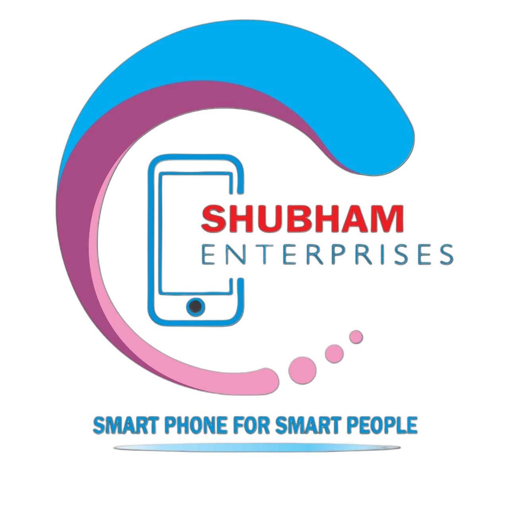

Scan to open review page
Tap anywhere to close

★
★
★
★
★
Share your experience
Phones
Accessories
Tablets
Laptops
All
Your Review
Loading your review…
◆
Copy & Post on Google
Premium Tech & Mobiles in Sigra
Shop No.4, opposite Axis Bank, Shastri Nagar, Sigra,
Varanasi, Uttar Pradesh 221002
Tap to copy your review, then paste it on Google.